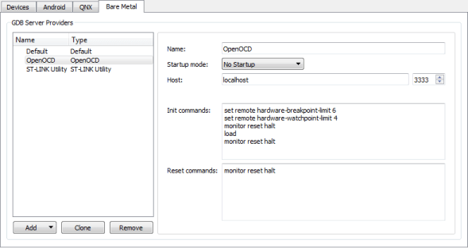
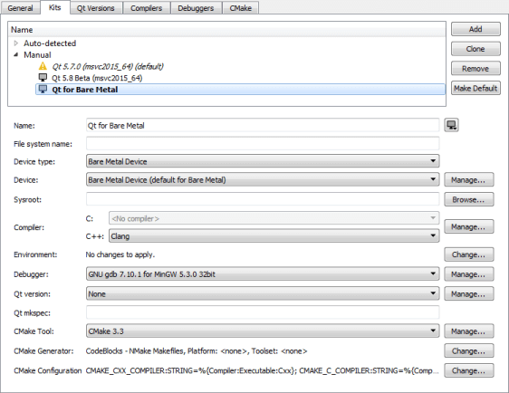
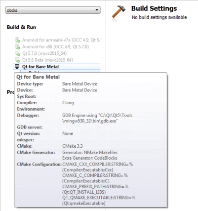

Connecting Bare Metal Devices
You can connect bare metal devices to a development host to run and debug applications on them from Qt Creator using GDB or a hardware debugger. This enables you to debug on small devices that are not supported by the generic remote Linux device plugin. However, if the device does not have Qt libraries, you need a fake Qt installation.
The bare metal device type accepts custom GDB commands that you specify in the device options. You can specify the commands to execute by default or the commands to execute when connecting to OpenOCD or ST-LINK Utility.
To connect bare metal devices:
- Select Help > About Plugins > Device Support > Bare Metal to enable the Bare Metal Device plugin.
- Restart Qt Creator to be able to use the plugin.
- Select Tools > Options > Devices > Bare Metal > Add > Default, OpenOCD, or ST-LINK Utility to specify connections to GDB servers or hardware debuggers:

- In the Startup mode field, select the mode to start the GDB server or debugger in. The available modes depend on the server or debugger.
- In the Host field, select the host name and port number to connect to the GDB server or hardware debugger.
- In the Init commands field, enter the commands to execute when initializing the connection.
- In the Reset commands field, enter the commands to execute when resetting the connection.
- Select Apply to add the GDB server or debugger.
- Select Tools > Options > Devices > Add > Bare Metal Device > Start Wizard:
- In the GDB server provider field, select a GDB server or hardware debugger.
- Select Apply to add the device.
- Select Tools > Options > Kits > Add to add a kit for building applications and running them on bare metal devices:

- In the Name field, specify a name for the kit.
- In the Device type field, select Bare Metal Device.
- In the Device field, select the bare metal device for the kit.
- Select Apply to add the kit.
- Open a project for an application you want to develop for the device.
- Select Projects > Build & Run, and then select the kit for building the application and running it on the bare metal device specified in the kit.

- Select Run to specify run settings.
Usually, you can use the default settings.